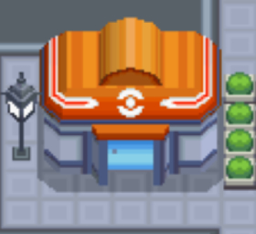

Points of Interest
Pokémon Center
An essential stop for any trainer, new or veterain. The
pokémon Center is a non-profit, free healthcare service
for all pokémon. It also serves as a place for trainers
to meet up to chat, trade, or set up battls with one
another. And at every center, you are sure to be greeted
by a Nurse Joy.
Trainer School
If you are a new trainer and want to brush up on your
knowledge on these creatures we call pokémon, come on
down to the Trainer School. The doors are even open to
those who are preparing to start their own journies.
The Pokétch Company
The Pokétch Company HQ, creators of the illustrious pokémon
watch, is located in north-west side of Jubilife City. It
is worth visiting as they are continuously creating new apps
and fetures that are more than willing to share with visitors.
Jubilife TV
Welcome to Jubilife TV, the top brodcasting station in all
of Sinnoh. Come on down to participate in our pokémon
dress-up. Or win a prize by participating in our Pokémon
Lottery Corner. Top prize will always result in a shiny
new masterball!
Global Trade Station (GTS)
Freshly built in the west side of the city,
Jubilife City proudly presents the Global Trade Station! By
utilizing cutting edge technology, the Global Trade Station, also
known as the GTS, is a plase where trainers can come and trade their
pokémon with other trainers far away in distant regions.